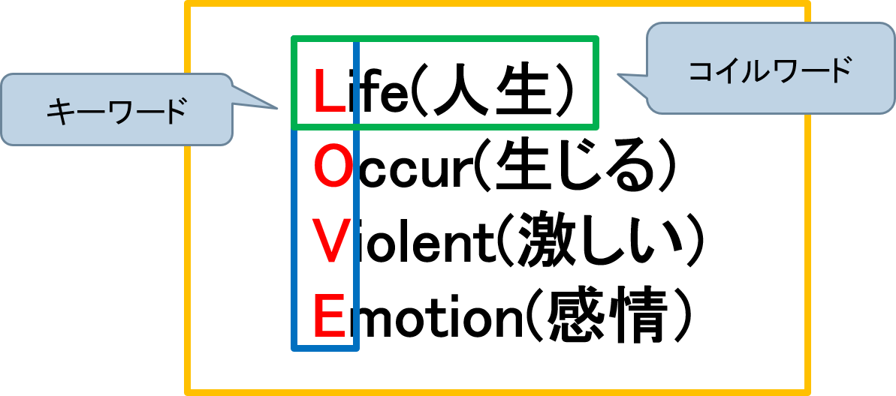

<div class="container">
  <font size="10">coil式学習法とは</font>
  <mat-card>
    <mat-card-content>
      <h1>
        この学習法は、頭の中に記憶を巻きつけ、単にスペルと意味を覚えるより、忘れにくいという学習法である。
        coilとは combination Of Initial Letters（頭文字の組み合わせ）のことで、この 4 つの単語の頭文字、C・O・I・L をとって、COIL(コイル) と米津博志 先生が名付けられた。
        またその学習法を解説し、実際に学習 できるように coil式問題が記載された coil式英単語という書籍がある。
        <p><a
            href="https://www.amazon.co.jp/%E5%A5%87%E8%B7%A1%E3%81%AE%E3%83%A1%E3%82%BD%E3%83%83%E3%83%89-%E5%B7%BB%E3%81%8D%E5%8F%96%E3%82%8B-%E3%81%A4%E3%81%AA%E3%81%8C%E3%82%8B-%E5%BF%98%E3%82%8C%E3%81%AA%E3%81%84-%E3%82%B3%E3%82%A4%E3%83%AB%E5%BC%8F%E8%8B%B1%E5%8D%98%E8%AA%9E/dp/4413037103/ref=sr_1_fkmrnull_1?__mk_ja_JP=%E3%82%AB%E3%82%BF%E3%82%AB%E3%83%8A&crid=1FETXST6ZU5MS&keywords=%E3%82%B3%E3%82%A4%E3%83%AB%E5%BC%8F%E8%8B%B1%E5%8D%98%E8%AA%9E&qid=1558432788&s=gateway&sprefix=%E3%82%B3%E3%82%A4%E3%83%AB%E5%BC%8F%2Caps%2C236&sr=8-1-fkmrnull"
            target="_blank">書籍はコチラ</a></p>
        
      </h1>
    </mat-card-content>
  </mat-card>

  <h1 align="center">学習を始める</h1>

  <button class="btn btn-lg btn-primary btn-block" routerLink="/home">問題選択画面へ</button>
</div>